ラウンド1の評価「要素が多い・エフェクトが派手」を受けて、Cyberpunk 案を1案1アイデアに絞り直しました。グリッチ帯、赤、HUD 線、テック文字、® はすべて削除。文字間は手でカーニングしています。
01
Cyberpunk: Edgerunners
参照: CYBERPUNK 2077 / エッジランナーズ（ラウンド2の元）
サイドバー幅（190px）での見え方。グリッチで少し潰れるので、小サイズ用はグリッチ無し版を別に作るのが妥当です。
- 書体
- Cyberway Riders（筆文字）/ Barlow Condensed 900 Italic / Share Tech Mono
- 色
- #FCEE0A #00F0FF #FF003C
- ライセンス
- Cyberway Riders は非商用限定。ハッカソン提出は問題ないが、商用化・トークン発行時は購入か自作トレースが必要。
- 所感
- 元ロゴの雰囲気に一番近い。文字同士の絡みは本家より整いすぎている。
02
Evangelion
参照: 新世紀エヴァンゲリオン タイトルカード
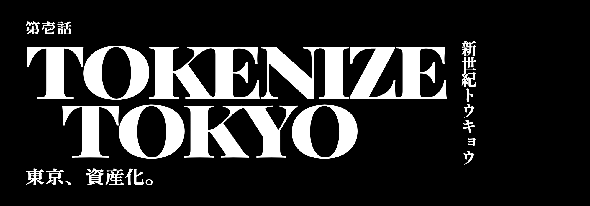
- 書体
- Shippori Mincho B1 800 / Playfair Display 900（すべて OFL、商用可）
- 色
- #FFFFFF / #000000
- 所感
- 白黒の極太明朝でエヴァ感は強い。透過版は白文字なので白背景では消える。本家のマティス EB ではないため欧文の癖がやや強い。
03
Akira
参照: AKIRA 劇場版ロゴ
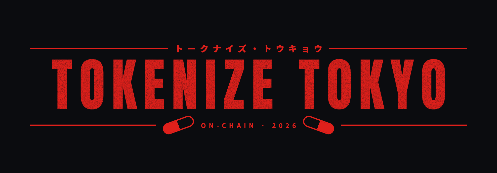
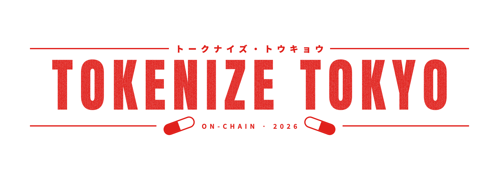
- 書体
- Anton / Noto Sans JP（OFL、商用可）
- 色
- #E0201B
- 所感
- 赤一色とカプセルで一目で AKIRA。Anton は縦長なので本家の横に広い重さは出ていない。
04
Lain Terminal
参照: serial experiments lain / 攻殻機動隊
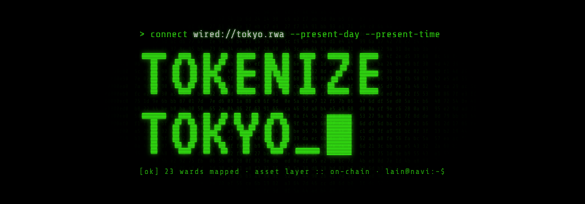
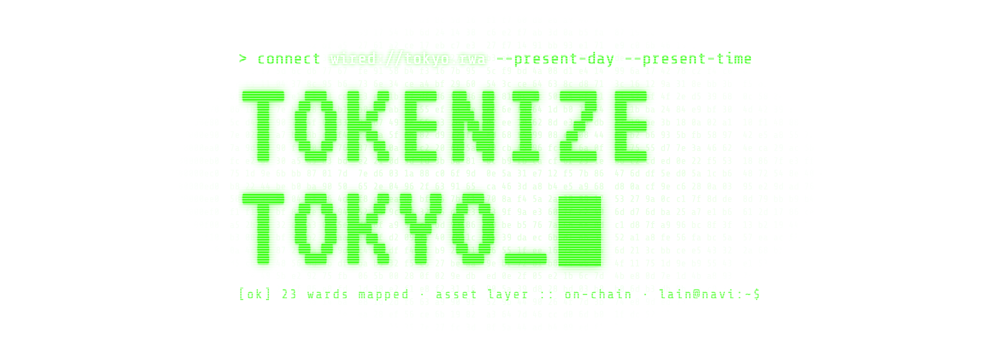
- 書体
- VT323 / Share Tech Mono（OFL、商用可）
- 色
- #39FF14
- 所感
- オンチェーンの文脈と相性が良い。ブロックカーソルは少し大きい。
04-Y
Lain Terminal / Yellow
natsuki 指定: 04 を黄色に指定色
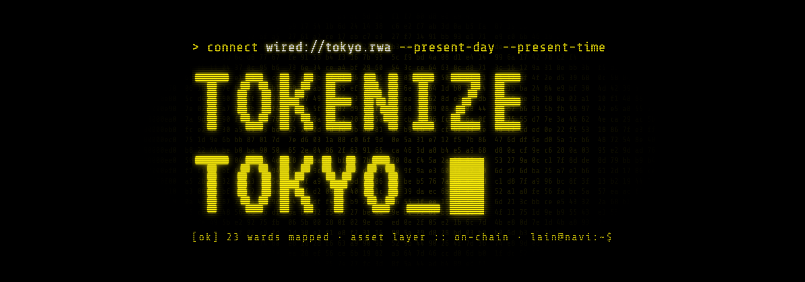
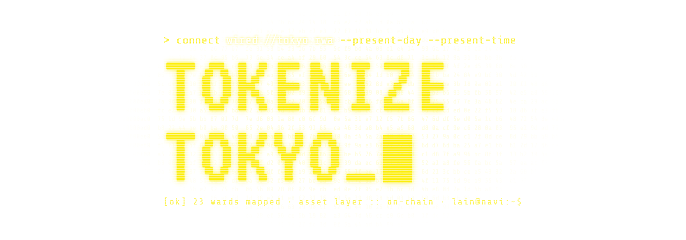
サイドバー幅（190px）での見え方。
- 書体
- VT323 / Share Tech Mono（OFL、商用可）
- 色
- #FCEE0A（Edgerunners と同じ黄）
- 所感
- 緑版の構成をそのまま黄に。Cyberpunk 案と同じ黄なので、既存 UI の黄系とも揃う。
04-A
Lain Terminal / Amber
参考: アンバー蛍光管ターミナル
- 書体
- VT323 / Share Tech Mono（OFL、商用可）
- 色
- #FFB000（アンバー）
- 所感
- 実在の古いアンバー端末に近い色味。純黄より落ち着いて見える比較用。
05
Tokusatsu
参照: スーパー戦隊タイトルロゴ
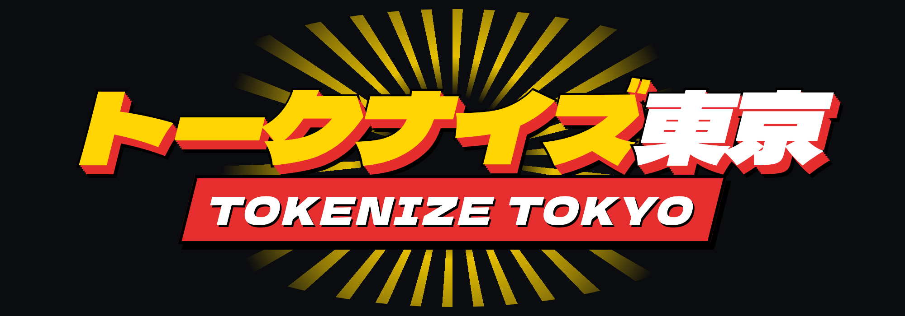
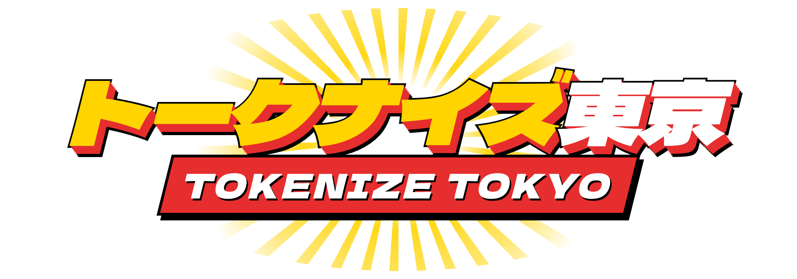
- 書体
- Dela Gothic One（OFL、商用可）
- 色
- #E62E2E #FFD400
- 所感
- カタカナ主役で日本らしさが最も強い。集中線が楕円に切れているのは調整余地あり。
06
Yakuza Brush
参照: 龍が如く
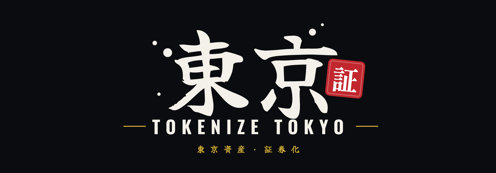
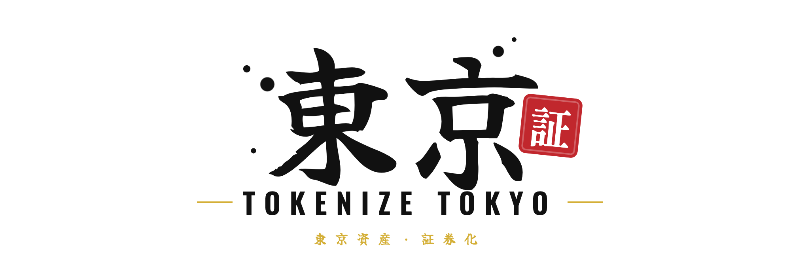
- 書体
- Yuji Boku / Yuji Syuku / Oswald / Shippori Mincho B1（OFL、商用可）
- 色
- #F4F1EA #C1272D #D4AF37
- 所感
- 「東京」＋朱印「証」で証券化の意味が乗る。白背景では墨が黒に切り替わるので両対応。筆のかすれは弱め。
07
City Pop 80s
参照: 80年代シティポップ / ヴェイパーウェイヴ
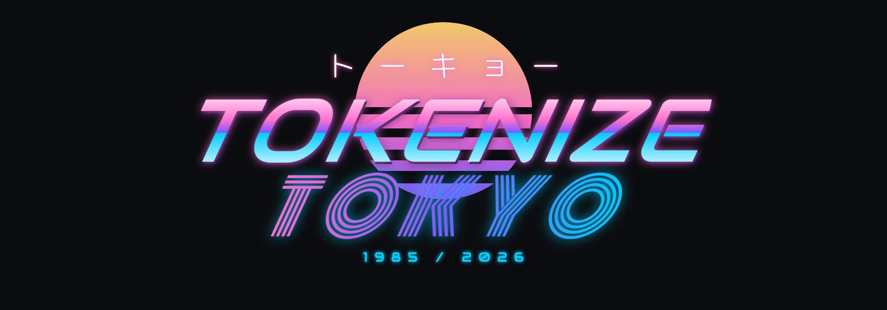
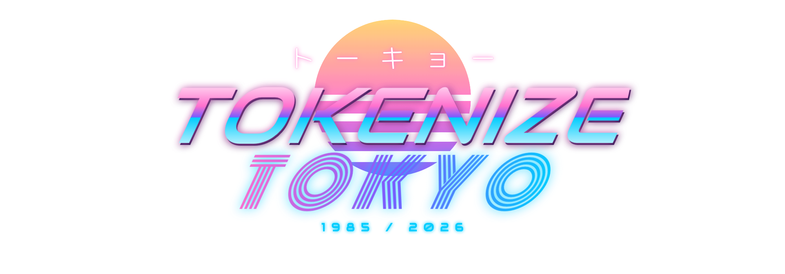
- 書体
- Audiowide / Monoton / M PLUS Rounded 1c（OFL、商用可）
- 色
- #FF71CE #7A5CFF #01CDFE
- 所感
- 華やかだが金融プロダクトとしては軽く見える。Monoton の TOKYO は小サイズで読みにくい。